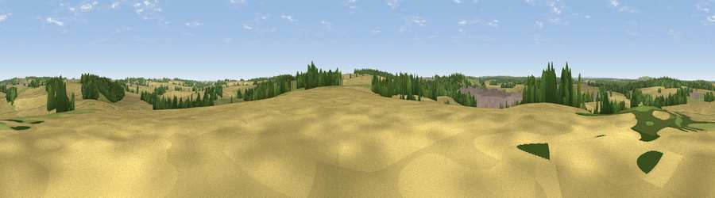

Viewpoint near Eakring
#33249 in England · top 40% of its area beats it · near Eakring · footpathWhere it is
The exact computed spot (SK 66875 62875). Click the marker for map links.
Public access: a public right of way passes within 39 m of this spot. Computed from Natural England's CRoW access layer and OpenStreetMap rights of way — not the legal definitive map. Always verify locally.
The view, rendered

A 360° render of this exact spot computed from the terrain model, tree cover and land cover — summer colours, afternoon light, calibrated against photographs of famous viewpoints. Real trees, hedges and buildings will differ in detail.
The panorama
Grey silhouette: terrain skyline in each direction (720 bearings, Earth curvature and refraction included). Dashed green: skyline with trees (+15 m) and buildings (+8 m) as obstacles. Blue strip: how far the ground is visible on each bearing.
Where the view opens
Wedge length = distance to the farthest visible ground on that bearing (vegetation-aware). Rings at 10, 25 and 50 km.
What fills the view
63% cropland · 16% woodland · 16% grassland · 5% built-up
Angular shares of the visible panorama (visual magnitude), not map area. Landscape diversity 0.45 (0–1 Shannon).
Key numbers
More beautiful places nearby
The staircase of upgrades: each row has a higher view potential than everything closer. Driving times are estimates from straight-line distance, calibrated against real road routing — check an actual route before setting out.
| Place | Direction | Drive | Score |
|---|---|---|---|
| Mill Hill | S · 1 km | ~3 min | 41.7 |
| Maplebeck Viewpoint | SE · 5 km | ~10 min | 42.5 |
| Burstheart Hill [Thoresby Colliery] | NNW · 6 km | ~13 min | 69.3 |
| Viewpoint near Maltby | NNW · 32 km | ~50 min | 70.7 |
| Crich Stand | WSW · 33 km | ~51 min | 73.0 |
| Alport Height | WSW · 38 km | ~57 min | 73.9 |
| Viewpoint near Wharncliffe Side | NW · 49 km | ~70 min | 75.2 |
| Viewpoint near Woodhouse Eaves | SSW · 51 km | ~72 min | 77.7 |
53.15881, -1.00130 · source: screening · position refined by local search. Computed location — check access rights before visiting.